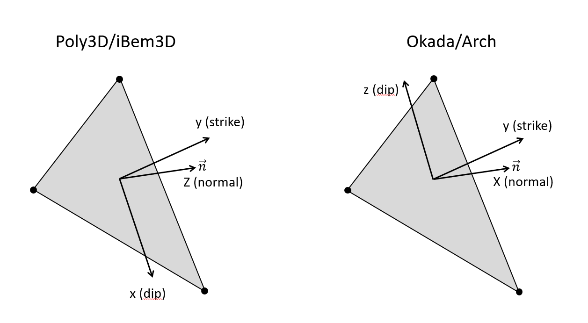

Convention
Okada vs Poly3D
As opposed to Poly3D, we use the Okada convention where x-axis represents the normal direction of a triangular element, the y-axis the strike direction and the z-axis the dip-direction pointing upward for positive value:
As the convention is related to the triangular elements making the discontinuities, and specifically the displacement discontinuity also called Burger vector, you can switch from Okada to Poly3D (or any convention of your choise) by using the BurgerFilter class. Here is an example of using the filter while gathering the computed burger vectors from a surface discontinuity:
# Switch to the Poly3D convention
filter = BurgerFilter()
filter.setAxisOrder(['dip', 'strike', 'normal'])
filter.setAxisRevert([true, false, false])
displ = filter.apply( surface.displ() )
Engineer vs geologist
As opposed to Poly3D which is based on geologist convention (for which compression is positive), we use the engineer convention, i.e., where compression is negatif.
Any positive value is extension, not compression. Therefore, a normal to a joint will be parallel to the minimum compressive stress, i.e., the maximum eigen value \(\sigma_1\), not the minimum \(\sigma_3\) as in geologist convention.
Local vs global
For discontinuities, burger’s vectors are computed at triangle’s center and in triangle local coordinate system.
However, when displaying (using OpenGl) iso-contours of Burgers on fault surfaces, this displacemment field has to be defined at vertices and in local coordinate system.
Similarly, when displaying vector field on fault surfaces, this displacemment field has to be defined at vertices and in glocal coordinate system.
This is why the object Postprocess provide the method burgers with 2 booblean parameters:
postprocess.burgers(local: bool, atTriangles: bool)